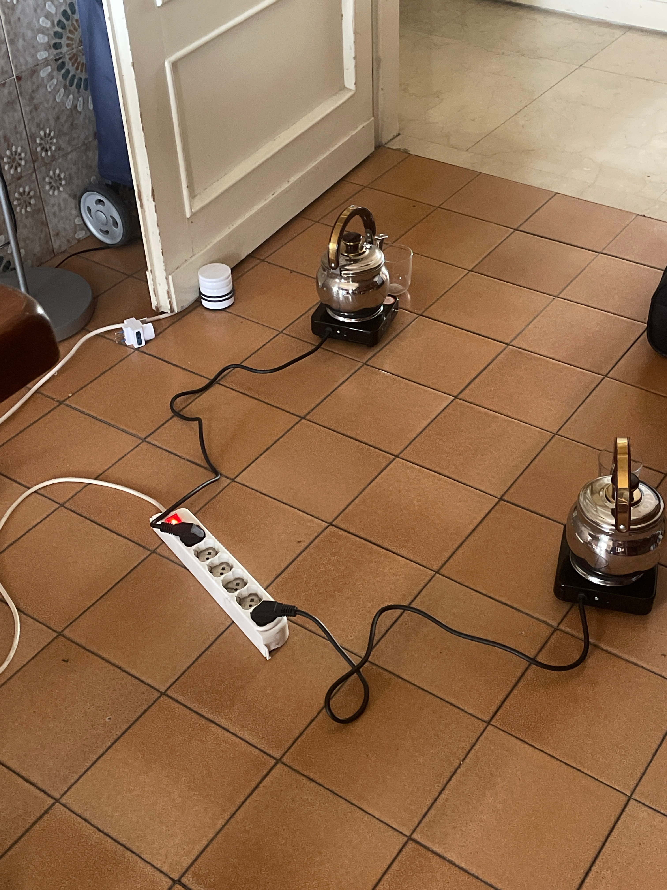
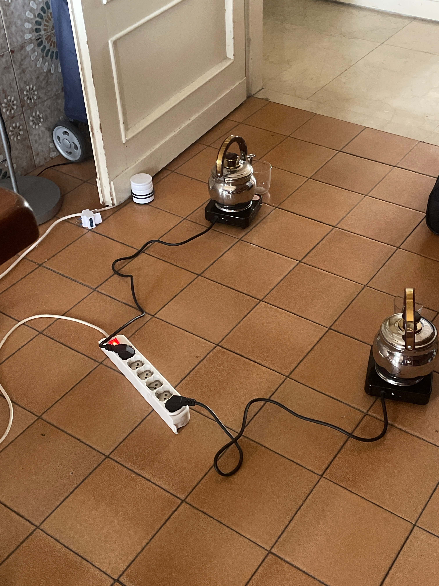
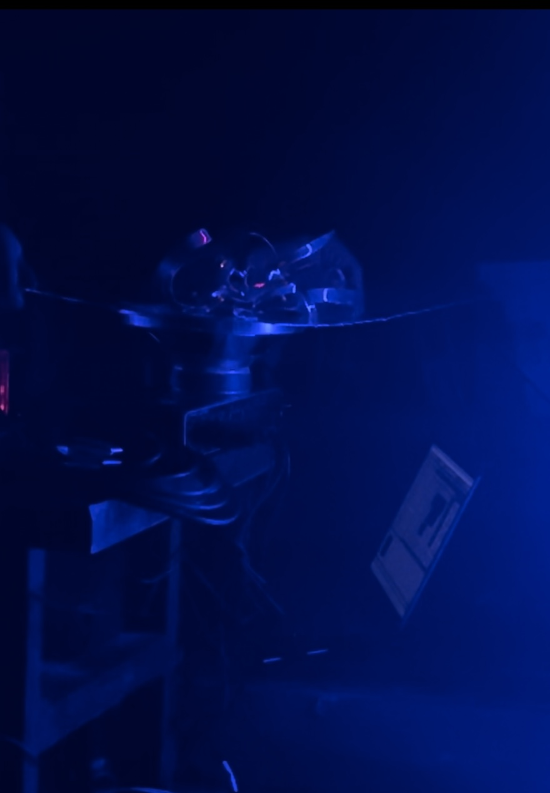
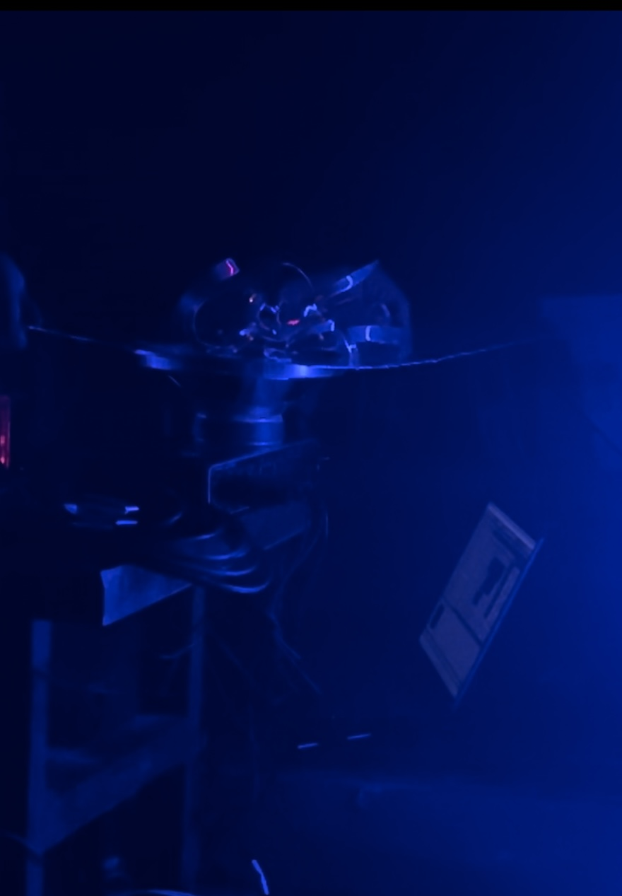

Playing with phonography to shape inter-objectivist fantasies and NoFi environments. "mikrokosmos" is an ongoing project - a montage of runaway daily life's recordings, metamorphic spectral processing, and fragmented melodies – inspired by a wide variety of '900 thoughts, from Sanguineti to Le Corbusier, Xenakis and Westerkamp.
The live setting for these sketches is a low-volume listening ground aired by a self-assembled, cheap multi-speakers system.
Here there is some images and videos of the work in progress. Like a diary of daily trials and first live outcomes in Lithuania (Jauna Muzika, Vilnius), Latvia, Poland, Netheralands (On Air On Site, Den Haag) and Italy.


 



 
